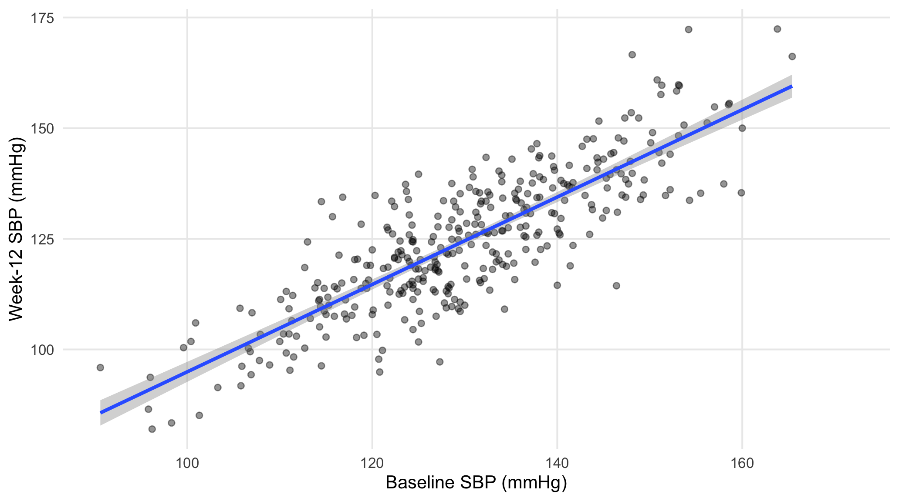
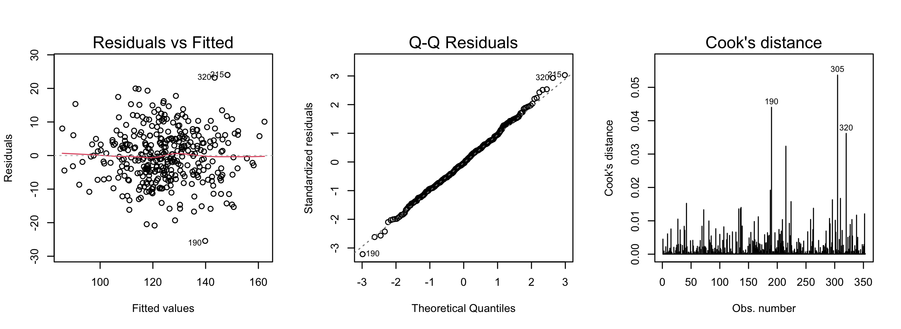

Linear regression provides a common language for simple regression, multiple regression, ANOVA, ANCOVA, and interactions. The word linear refers to linearity in the coefficients, not necessarily a straight-line relationship in the raw predictor. A model containing \(x^2\), \(\log x\), or a spline basis remains a linear regression model if the coefficients enter linearly.
For observation \(i\), a multiple linear regression model is
\[ Y_i=\beta_0+\beta_1X_{i1}+\cdots+\beta_qX_{iq}+\varepsilon_i, \]
where \(Y_i\) is the outcome, \(X_{i1},\ldots,X_{iq}\) are predictors, the \(\beta\)’s are regression coefficients, and \(\varepsilon_i\) is the unexplained error.
Least squares chooses the coefficients that minimize the sum of squared errors:
\[ \text{SSE}=\sum_i(Y_i-\hat Y_i)^2. \]
The total variation in the outcome is
\[ \text{SST}=\text{SSR}+\text{SSE}, \]
where:
Therefore,
\[ R^2=\frac{\text{SSR}}{\text{SST}}, \]
which is the proportion of outcome variation explained by the model. Adjusted \(R^2\) also accounts for the number of predictors and therefore discourages adding variables that contribute little.
sbp_simple <- lm(sbp_week12_mmHg~sbp_baseline_mmHg, data=dat)
broom::tidy(sbp_simple, conf.int=TRUE) |>
kbl(digits=3, caption="Simple regression of week-12 SBP on baseline SBP")| term | estimate | std.error | statistic | p.value | conf.low | conf.high |
|---|---|---|---|---|---|---|
| (Intercept) | -3.775 | 4.580 | -0.824 | 0.41 | -12.783 | 5.232 |
| sbp_baseline_mmHg | 0.987 | 0.035 | 28.175 | 0.00 | 0.918 | 1.056 |
ggplot(dat, aes(sbp_baseline_mmHg, sbp_week12_mmHg)) +
geom_point(alpha=.42, na.rm=TRUE) +
geom_smooth(method="lm", se=TRUE, na.rm=TRUE) +
labs(x="Baseline SBP (mmHg)", y="Week-12 SBP (mmHg)")
Figure 16.1: Week-12 SBP versus baseline SBP with the simple regression line.
The slope is the expected difference in week-12 SBP associated with a 1-mmHg higher baseline SBP. In this descriptive model it is not a causal effect of baseline SBP.
A treatment-adjusted SBP model can include prespecified baseline covariates. The following model uses treatment, age, and BMI in addition to baseline SBP; all are measured before or at randomization.
sbp_multi_dat <- dat |> drop_na(sbp_week12_mmHg, sbp_baseline_mmHg, treatment_arm, age_years, bmi_kg_m2)
sbp_multi <- lm(sbp_week12_mmHg~sbp_baseline_mmHg+treatment_arm+age_years+bmi_kg_m2, data=sbp_multi_dat)
tibble(R2=summary(sbp_multi)$r.squared, adjusted_R2=summary(sbp_multi)$adj.r.squared) |> kbl(digits=3)| R2 | adjusted_R2 |
|---|---|
| 0.748 | 0.744 |
broom::tidy(sbp_multi, conf.int=TRUE) |>
kbl(digits=3, caption="Multiple linear regression for week-12 SBP")| term | estimate | std.error | statistic | p.value | conf.low | conf.high |
|---|---|---|---|---|---|---|
| (Intercept) | -0.792 | 4.576 | -0.173 | 0.863 | -9.792 | 8.207 |
| sbp_baseline_mmHg | 1.020 | 0.036 | 28.421 | 0.000 | 0.950 | 1.091 |
| treatment_armDrug_A | -4.666 | 1.054 | -4.425 | 0.000 | -6.740 | -2.592 |
| treatment_armDrug_B | -8.789 | 1.052 | -8.353 | 0.000 | -10.858 | -6.720 |
| age_years | -0.043 | 0.037 | -1.160 | 0.247 | -0.116 | 0.030 |
| bmi_kg_m2 | -0.015 | 0.096 | -0.155 | 0.877 | -0.204 | 0.174 |
A treatment coefficient is the mean difference between treatment groups after accounting for the other variables in the model.
If the model includes a treatment interaction, the treatment effect depends on the interacting variable and should not be interpreted as one overall treatment effect.
Variance inflation factor (VIF) measures how much collinearity with other predictors increases the variance of a regression coefficient. Values above 5 may indicate problematic collinearity, while values above 10 are often considered serious. These are guidelines, not absolute cutoffs.
Linear regression assumes that the model describes the outcome appropriately and that the residuals behave reasonably.
The main checks are:

Figure 16.2: Residual-versus-fitted, Q–Q, and Cook’s-distance diagnostics for the multiple SBP model.
lmtest::bptest(sbp_multi)
#>
#> studentized Breusch-Pagan test
#>
#> data: sbp_multi
#> BP = 5, df = 5, p-value = 0.4A small Breusch–Pagan p-value suggests that the residual variance is not constant.
If the mean model is appropriate but the residual variance is unequal, HC3 robust standard errors can provide more reliable confidence intervals and p-values.
robust_lm_tidy(sbp_multi) |>
kbl(digits=3,caption="HC3-robust coefficient inference for the SBP model")| term | estimate | std.error | statistic | p.value | conf.low | conf.high |
|---|---|---|---|---|---|---|
| (Intercept) | -0.792 | 4.738 | -0.167 | 0.867 | -10.112 | 8.527 |
| sbp_baseline_mmHg | 1.020 | 0.038 | 27.090 | 0.000 | 0.946 | 1.094 |
| treatment_armDrug_A | -4.666 | 1.095 | -4.262 | 0.000 | -6.819 | -2.513 |
| treatment_armDrug_B | -8.789 | 1.029 | -8.544 | 0.000 | -10.812 | -6.766 |
| age_years | -0.043 | 0.040 | -1.067 | 0.287 | -0.123 | 0.036 |
| bmi_kg_m2 | -0.015 | 0.091 | -0.165 | 0.869 | -0.193 | 0.163 |